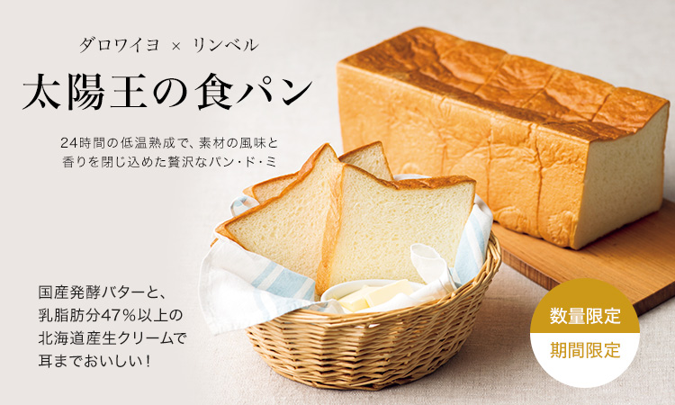
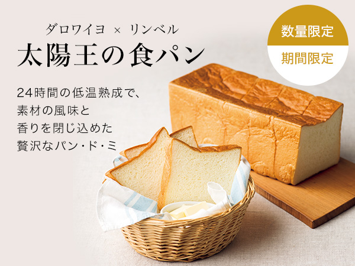
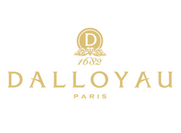
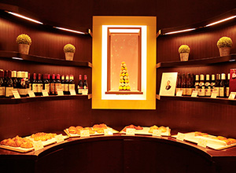
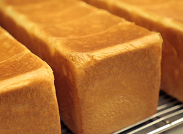
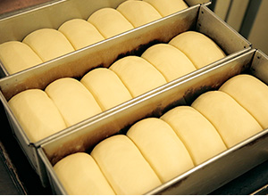
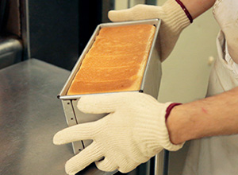
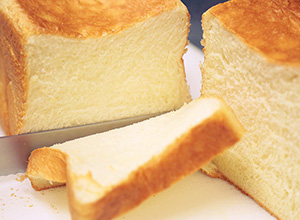

リンベルが日本一と認めた「極みの味」
ダロワイヨとのコラボで生まれた極上の食パン


ここが「極み」
- こだわりの国産バターと生クリームを使用。
- バター、生クリーム、卵、牛乳だけで焼き上げたリッチな味わい。
- 24時間以上の低温熟成で際立つ素材の味。
- １日10本、月3回の少量限定生産。
- 焼きたての味を、焼き上げた翌日にお届け。
マカロンやスイーツで高い人気を誇る「ダロワイヨ」とリンベルのコラボで生まれた、特製の「パン・ド・ミ ロア」。今回ご紹介する「日本の極み 太陽王の食パン」です。
こだわりの国産のバターと生クリームをふんだんに使った生地を、24時間以上の低温熟成を行うことで生まれた味わいと食感は、通常の「パン・ド・ミ」よりさらにリッチな、もっちり・しっとりした、まさに味の極み。
1日最大10本、しかも月に3回しかつくらないという極みの味わいは、鮮度や冷蔵による味の変化にもこだわりました。焼きあがったそのままの味を、風味を逃すことを避け、3斤分にあたる1本を切らずに、焼き上げた翌日に常温便でご自宅にお届けします。
ダロワイヨ本店でも販売していない、数量＆期間限定の贅沢な美味の極みを、この機会にぜひお試しください。
商品のこだわりポイント
ルイ14世も愛したダロワイヨの味をさらに極めた、
ここでしか手に入らない特製の「パン・ド・ミ ロア」


パリで190年余の歴史と伝統を持つ、フランス美食ブランド「ダロワイヨ」。 その名を聞くとマカロンやケーキ「オペラ」などスイーツを思い浮かべる方も多いかと思いますが、ダロワイヨのパンもまたルイ14世も愛した美食の味を今に引き継ぐ、由緒ある味わいなのです。
そのフランス直伝の美味しいパンづくりを今に伝えるダロワイヨのブーランジェ（パン職人）の手によって、リンベルだけで販売するために完成したのが、特製の「パン・ド・ミ ロア」。今回ご紹介する「日本の極み 太陽王の食パン」です。
「パン・ド・ミ」とは、フランス語で「中身のパン」、「ロア」とは「王様」を意味する言葉。外側のパリッ、ザクッとした耳部分（クラスト）を楽しむバゲッドに対して、味わいのあるもちもちした中身（クラム）が魅力のパンです。
この優しい味わいを生み出すレシピは、ダロワイヨ代々のブーランジェに引き継がれ、今も店頭では「パン・ド・ミ」「パン・ド・ミ エクセル」の２種類が販売されています。
ふたつの違いは、原材料と熟成方法。前者は水を使用し、低温熟成はなし。後者は水を使用せず、牛乳、卵のみを使い、24時間以上の低温熟成をさせてから、それぞれ焼き上げたもの。
「日本の極み 太陽王の食パン」は、その「パン・ド・ミ エクセル」の味わいをさらに極めた、まさに「パン・ド・ミ ロア」と呼べる逸品です。
こだわりのバターと生クリーム、24時間以上の低温熟成が生み出す極みの味


ダロワイヨ×リンベルのコラボで生まれた「太陽王の食パン」は、まさに食パンの「王」にふさわしく、贅沢な原材料・製法から誕生しました。
特にこだわった原材料は、国産の発酵バターと、乳脂肪分47％以上の北海道産生クリーム。このふたつを使うことで、とても芳醇な味わいを生み出しています。また、バターと生クリームだけでは味が重たくなりすぎるため、普通の「パン・ド・ミ」では、水を加えますが、「日本の極み 太陽王の食パン」では、よりリッチな「パン・ド・ミ エクセル」スタイルのレシピを採用し、水ではなく、牛乳をバランスよく配合。
こうして生まれた生地を5℃以下、24時間以上の低温発酵でゆっくりと熟成させることにより、生地に深い香り、豊かな食感が生み出されるのです。
計量から完成までに約36時間を要するという、時間と情熱をたっぷりかけた希少な「日本の極み 太陽王の食パン」。
これまで食べた食パンとはまったく違う、濃厚な粉の香りや素材の上品な味わいに「これがパン？」と誰もが驚くこと間違いありません。
「耳までおいしい」を実感！ おすすめの召し上がり方


「日本の極み 太陽王の食パン」がお手元に届いたら、まずはそのままスライスして、お召し上がりください。トーストしないでそのままで食べるのであれば１斤５枚切りの厚さ、トーストの場合は４枚切りの厚さがおすすめです。
発酵バターの芳醇な風味が感じられ、「耳までおいしい」を、きっとご実感いただけるはずです。
バターやジャムはもとより、オリーブ油、岩塩とも相性がよいですが、スライスしたパンにアイスクリームを乗せてはさんで食べる、という方法もぜひお試しください。「太陽王の食パン」ならではのリッチで芳醇な味わいは濃厚なアイスクリームに味が負けることなく、他のパンとでは味わうことのできない味のハーモニーをお楽しみいただけます。
一度食べたら、もう普通の食パンでは満足できないという方が続出の、ダロワイヨ×リンベル コラボによって生まれた「日本の極み 太陽王の食パン」。
生産数や、常温便でのお届けへのこだわりのため、販売時期も限定されていますので、ぜひこの機会にお試しください。
ホームパーティなどでふるまえば、ゲストの皆さんが驚きの笑顔に包まれること請け合いです。
お客様の声
- スライスしただけでバターのよい香りが鼻腔をくすぐり、口にいれると濃厚な味わいが広がります。
パンというよりケーキを食べたかのようなリッチな感じ。
特に、アイスを載せて食べる方法はやみつきになりそう。 - 40代 女性
- しっとりとしていて、きめ細かい口当たりで中はふわっふわ。
ほんのり甘くてバターの香りが鼻を通り抜けます。
私はトーストして何もつけないで食べるのが大好きです。 - 30代 女性
料理研究家やグルメライターも絶賛！
「美食のスペシャリスト」の方々からも
お褒めの言葉をいただいています！

青い箱を開けた瞬間
バターの香ばしい香りが
キッチン中に広がる
料理家 綾夏さん
詳しくはこちら